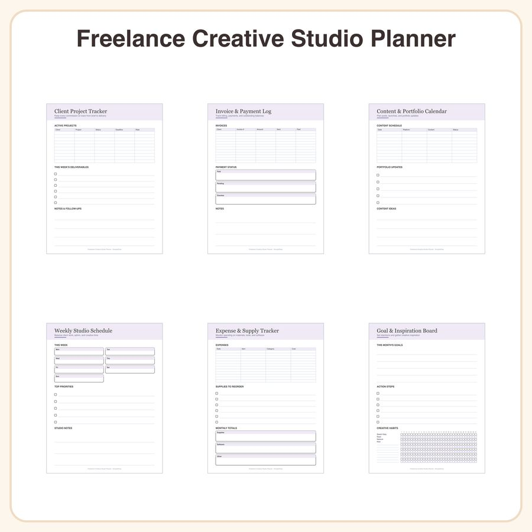

$5.50
View on EtsyDitch the corporate planner and organize your one-person creative business in style ✦ This printable studio planner was designed for freelance illustrators, designers, and Etsy sellers who need to track client work, invoices, and portfolio goals without the boring spreadsheet vibe. Clean modern layout, soft lavender and charcoal accents, thin geometric line icons, and airy sans-serif headers make it a joy to use daily. What's included: • Client project tracker (2 pages) • Invoice and payment log (2 pages) • Content and portfolio calendar (2 pages) • Weekly studio schedule (1 page) • Expense and supply tracker (2 pages) • Goal and inspiration board page (1 page) File details: • Multi-page PDF, sized for both US Letter and A4 • High-resolution 300 DPI files • Instant digital download — no physical item will be shipped How to use: Print at home or at a copy shop and fill in by hand, or import into GoodNotes, Notability, or your favorite PDF annotation app for a paperless setup. Reuse pages as often as you like by reprinting or duplicating digitally. License: For personal and small-business commercial use only (up to 500 printed units). You may not resell, share, or redistribute the digital files themselves. Honest disclosure: This planner was designed by our small shop with the help of AI tools as part of our creative process.